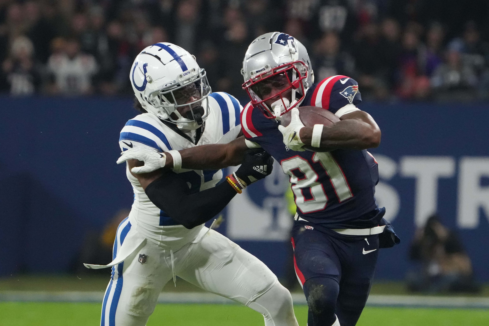

Patriots Stock Report: 3 up, 3 down
After a disastrous 2-8 start, it's finally the bye week in New England. The Patriots organization hoped to
be sitting in a better spot after 10 games, but this is the situation they find themselves in.
With there not being a game this weekend, I thought it would be a good time to fill out another Patriots
stock report.
Keep in mind, that I'm basing this off of a recent play. For that reason, a guy like Christian Gonzalez,
whose stock is through the roof, won't be listed, simply because he's injured and hasn't played.
With all that in mind, here's my Patriots stock report.
Patriots Stock Report
Up
Mike Onwenu
Have the Patriots found themselves a long-term right tackle? It appears they may have. In 4 games at right tackle, Mike Onwenu has given up 4 total pressures. He's also been a dominant force in the run game. It's no coincidence that the Patriots have begun to run the ball better as of late.
Onwenu is a free agent after this season, and at this point, he's a must-keep. The former Michigan product has provided stability to a position that has desperately needed it.
Jahlani Tavai
You have to love the type of player Jahlani Tavai has developed into. Tavai has 61 combined tackles, 4 pass deflections, 1 forced fumble, 2 tackles for loss, and 3 quarterback hits this year.

Nathan Ray Seebeck-USA TODAY Sports
Maybe none of that pops out to you, but Tavai has been a consistent force in just about every aspect of defense. He can run defend, he pass rushes well in his limited pass-rushing reps, and maybe most surprising is how well he's been in pass coverage.
Tavai had a breakout 2022 season and I'd argue he's gotten even better in 2023. His growth as a player has been remarkable to watch.
Christian Barmore
We've begun to see Christian Barmore hit a new gear. Barmore had a fine start to the year, but he's reached new heights in recent weeks.
In total, this season, Barmore has 26 total pressures per PFF. He's also batted down a few passes at the line of scrimmage.
Barmore's pass rushing is more refined than his run defending, but he's not bad in that area either.
If he can continue on this path, Barmore is going to become one of the more dominant interior pass rushers in the NFL. He's got the talent and it's really starting to flash this season. Keep in mind, Barmore is only 24 years old. He should be around for a while.
Bonus
Jabrill Peppers
It's worth shouting out Jabrill Peppers for a couple of reasons. He's a great run-defending safety and he's formidable in pass coverage too.
Peppers is as durable as it gets and he's also shining as a leader. Peppers has come into his own in the past two years in New England.
Demario Douglas
The numbers aren't going to "wow" you, but Demario Douglas is a bright spot on this team. His 30 catches for 361 yards are more reflective of the poor offense around him than his skill level.

Kirby Lee-USA TODAY Sports
Douglas has a ton of talent and it's apparent when watching him play. Pop is one of few players on the Patriots that can beat man coverage and he's so shifty after the catch.
Douglas will be a fun player to watch the rest of the year.
Down
Mac Jones
The hope was that Mac Jones would have a bounce-back season after a bad 2022, but that hasn't happened. In fact, you could argue Jones has actually gotten worse.
Kirby Lee-USA TODAY Sports
The stat that pops out to me most is his 19 turnover-worthy plays according to PFF. That leads the entire NFL. Jones looks like he's completely lost confidence.
It's not just a quarterback problem in New England, the situation isn't great, but Jones bears responsibility for his mechanics turning to crap and his inability to take care of the football.
It's been really unfortunate to see Jones continue to regress.
Tyquan Thornton, JuJu Smith-Schuster, and DeVante Parker
I'm grouping these three wideouts together because it's been a disappointing year for them all.
Starting with Tyquan Thornton who just hasn't been able to build any momentum in New England. He's not even played this season outside of a handful of snaps.
As for JuJu Smith-Schuster and DeVante Parker, they just haven't been able to live up to the billing of productive veteran wideouts. Both look incredibly limited when on the field.
J.C. Jackson
J.C. Jackson is trending down both on and off the field. Jackson was benched to start the game against the Commanders a couple of weeks ago and then told to stay home during the Patriots trip to Germany to play the Colts.
This came after Jackson was also told to stay home and was cut from the Chargers earlier this year. That's not great.
On top of all this, Jackson hasn't been a good corner to begin with. His fall off from two seasons ago has been dramatic.
Bonus
Cole Strange
The former first-round pick has struggled with injuries this season and he's also struggled when on the field too. In only 6 games, Strange has allowed 18 total pressures per PFF. It's not been good enough.